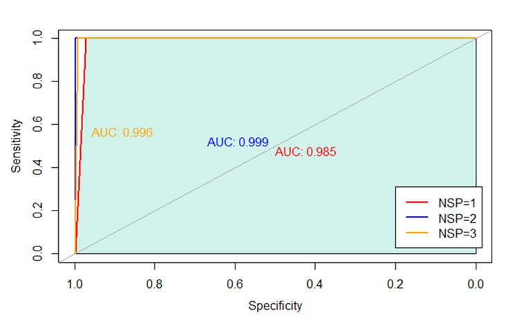

PARK Yuyeon
+82-10-2527-5997 ·
puyoun@gmail.com
Statistician, Data Scientist, Now Data Analyst
GPA: 4.1/4.3
GPA: 3.45/4.3
It was an individual project. This project aims to analyze and predict the monthly traffic volumes at both entrance and exit of Daejeon IC using the information including locations and the traffic volumes of 343 ICs in August 2021. In this paper, there are three steps to analyze functional data: 1) Making data as a functional form using Fourier basis, 2) Clustering formed data into 6 clusters through K-Means algorithm, 3) Predicting the traffic volumes of unobserved point, Daejeon IC, using kriging.
For the entrance prediction, the estimated value is similar to the true value, on the contrary, the exit prediction could not estimate well. There are two possibilities of failure: 1) If in the resampling step, the extracted data could not represent the characteristics of each cluster, 2) If each cluster’s lengths are significantly different. Therefore, the failure of prediction in the exit might be from those two reasons.
It was the individual project. This project aims to analyze and predict the anomaly of sequence of PM10 during 2021. In this paper, there are four methods to analyze PM10 data: 1) Autoencoder, 2) Variational Autoencoder, 3) LSTM-Autoencoder, 4) LSTM-Variational Autoencoder. Among those four methods, LSTM-Autoencoder performed best in terms of accuracy.
For analyzing the trend of PM10, dataset consisted with various variables will be used in this project. Every data was collected same point, Jung-gu, Seoul. The explanations of each variable are here. There are 15 multivariate variables as X, and PM10 used as Y variable. In this data, the NA values were filled with 0 because almost blanks means there were no weather events.
The experiments were conducted through four methodologies: Autoencoder, Variational Autoencoder, LSTM-Autoencoder, LSTM-Variational Autoencoder.
Autoencoder consists of two parts, encoder, and decoder. It works with those processes: 1) Input data to an encoder with several layers, 2) After encoding, the result of encoding is put to the decoder using Repeatvector in Keras, 3) After decoding, the reconstructed data would be made, then compare the estimated data with real data.
Similarly, Variational Autoencoder works with a process with four steps, but between step 2) and step 3), the latent dimension has to be added. In other words, a latent variable assigned to the Gaussian distribution would be made after encoding. Then inputting those variables into the decoder makes the reconstructed data.
LSTM AE and LSTM VAE also follow similar flows to those models that do not relate to LSTM layers. In those two models, LSTM AE and LSTM VAE, use LSTM layers instead of vanilla denses used above. For using LSTM, it is necessary to stack the last layer with Time-distributed because LSTM is designed for analyzing the temporal sequence. Those four models not only do dimension reduction but also reconstruct data as similar as possible. In this regard, it is meaningful to compare those models’ performances for finding out the best model.
Overall, the performances of each model are not good than expected. There are two possibilities of failure: 1) This project conducted in multivariate way, even without PM10 in X variables. In other words, the kind of the variables could deconcentrate whole data. If PM10 data was used only, then that could make better performances than now. In addition, PM10 is a weather data, that means it could be affected by various factors. However, the anomaly detection in machines does not contain the risk of being affected by those factors. That is the biggest differences of related papers and this project. 2) There were not enough time and devices to analyze it in infinite way. If GPU conducted this experiment, then it could allow us to earn much of times to analyze it. Although, the LSTM-AE model performed well among those four models in terms of accuracy, and if modify the LSTM-AE model in various way, the performance could be improved. In the perspective of recall for abnormal values, VAE and LSTM-VAE model performed well similarly. Therefore, the models with latent space could find anomalies well.
It was an individual project to predict the price elasticity of demand. I analyzed wheat gross production values in the U.S. and U.S. - foreign wheat price, dollars per metric ton yearly data for the last 56 years. For the first, I defined “Domestic disappearance million metrics tons” as a variable named “Demand”, which means demanded amount of wheat in the U.S., “Price of wheat in current USD” as “Price”. In addition, I used CPI from the USA CPI in 2010 as 100. I used ARMIA, ADL, and VAR model to predict wheat price. Thus, it was purposed to analyze the price elasticity of domestic demand between “Demand” and “Price” in the USA. The USA is one of the biggest wheat-production countries, and consume wheat as their daily meal. Therefore, it is important to find the effect of the wheat demand on its price for forecasting consumers’ consumption behavior. Also, the Russia-Ukraina Invasion in February 2021 caused pricing fluctuation all over the world including wheat. Wheat consumption has increased year over year so it has been necessary to manage the production volume of wheat in the USA. This research and analysis could suggest how to secure wheat stably in the near future.

It was a team project using various ML methodologies with fetal heart rate and uterine activity data to classify fetal health conditions in 3 levels; Normal, Suspect, and Pathologic. For determining the “Suspect” status, we used Machine Learning Classification such as Decision Tree, Random Forest, Support Vector Classifier, Support Vector Machine, Xgboost, and KNN. To decide the best model for finding the suspicious status of the fetus, we used 3 different types of evaluation thresholds: Accuracy, ROC, and Time. Decision Tree spent the shortest time among those methodologies but accuracy was low. Random Forest spent about 16 sec for learning and testing, and also had high accuracy. SVC had the lowest accuracy and needed about 1 minute for modeling. SVM had the 2nd highest accuracy but took the longest time for modeling. Xgboost and KNN spent reasonable time modeling and had greater accuracy than Decision Tree and SVC. Even Xgboost had the highest accuracy among those methodologies.
It was a team project. We created an algorithm to find a solution to the N-queens problem using a local search and optimization, Simulated Annealing, Hill Climbing, and Local Beam Search. We compared their performances in accuracy and running time. I found that Simulated Annealing and Local Beam Search were superior in performance, but took a long time to calculate solutions via python.

It was a team project, and I was the leader. Rather than using traditional GLM based models, we used the deep learning methodologies LSTM, CNN-LSTM, and GRU to predict time series data. I compared their performance and suggested future areas of research in the prediction of apartment pricing data. We made several important conclusions from the project, namely: 1) LSTM and GRU have similar performances in time series data, 2) confirmed the results of a number of previous papers in this topic area, and 3) identified the most important variables for predicting results with apartment pricing data.

It was a team project, and I was the leader. We analyzed weather data using the deep learning methodologies LSTM and CNN-LSTM, as well as ARIMA. Also, I constructed a model to reduce MSE and accurately predict a monthly weather data result. We used logistic variable selection before replacing outliers and finding a correlation between variables. Overall, we discovered CNN-LSTM's performance was superior to the other methodologies.
It was a team project, and I was the leader. We used text mining, a NLP method, to classify and categorize Korean customer survey data. We used emotion analysis and LDA (Latent Dirichlet Allocation).
It was an individual project. I researched GDP and the ratio of education in Humanities. I used the individual internet usage ratio as an instrumental variable. I made several important conclusions from the project, namely: 1) GDP and the individual internet usage have a meaningful relationship so that the government can make efficient ODA policies for developing countries, 2) the ratio of education in Humanities was not higher than expected, so it could be used as basis to widen its area.

It was an individual project. I researched how the internet usage ratio affects poverty in over 256+ countries. I used linear, logistic, probit models. I used the ratio of post-secondary education, GNI, and female first marriage age as additional variables. I made several important conclusions from the project, namely: 1) it could explain the relationship between education level and internet distribution rate, 2) since the pandemic arose, it could be a basis of making policies for post-pandemic preparation.

It was a team project, and I was the leader. We predicted the amount of solar power generation in 3 days by analyzing seasonal tendency and used ARIMA to make predictions.

It was an individual project. I researched the relationship between internet usage and educational states in over 200+ countries and used linear regression. It became a basis of two projects in a Categorical variable course and a Statistical seminar course.
It was a team project. We used population mean, variance, and its ratio to analyze correlation between the cost of the means of communication and the telephone agency. We made several important conclusions from the project that among 118+ students in Ewha Womans University, namely: 1) 79% of students do not pay the cost themselves, 2) each telephone agency has similar percentages regardless of its cost scale.


Economic Data Analysis
Data Mining
Selected Topics in Data Analysis I : FDA(Functional Data Analysis), STDA(Spatio-Temporal Data Analysis)
Advanced Topics in Contemporary Statistics II : Generative Model and Deep Learning
Topics in Statistical Computing I : Computational Statistics, Algorithm
Generalized Linear Model
Bayesian Statistics
Probability Theory I
Regression Analysis
Theoretical Statistics I
Seminar in Statistics II
Categorical Data Analysis
Data Mining
Analysis of Life Science Data
Introduction to Time Series Analysis
Programming for Statistics : VBA, Python
Computational Statistics and Lab : SAS
Mathematical Statistics I,II
Sampling Survey Method
Regression Analysis
Basic Probability Theory
Basic Statistics